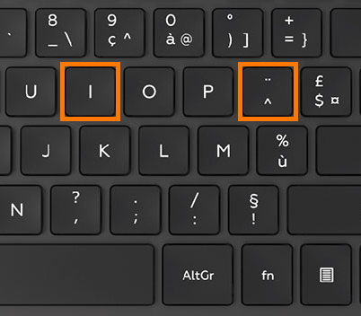

L'accent circonflexe
Objectif : Apprendre à taper des lettres avec un accent circonflexe en combinant deux touches
💡 Conseil important
L'accent circonflexe est une touche morte : elle ne produit rien toute seule. Il faut d'abord appuyer dessus, la relâcher, puis appuyer sur la lettre souhaitée.
Comment taper l'accent circonflexe
Étape 1
Appuyez une fois sur la touche ^ (accent circonflexe) puis relâchez-la.
Appuyez une fois sur la touche ^ (accent circonflexe) puis relâchez-la.
Étape 2
Appuyez ensuite sur la lettre souhaitée.
Exemple : ^ puis i = î
Appuyez ensuite sur la lettre souhaitée.
Exemple : ^ puis i = î
Aide visuelle

Exercez-vous !
Cliquez dans la zone ci-dessous et tapez les caractères suivants :
i
î
a
â
e
é
è
ê
i
î
o
ô
u
ù